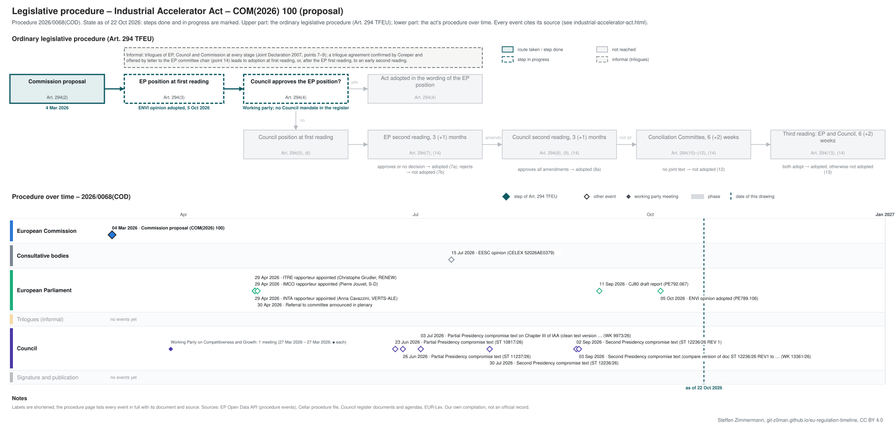

← Regulation timeline › Industrial Accelerator Act › Legislative procedure · All procedures
Industrial Accelerator Act – COM(2026) 100 (proposal)
Procedure 2026/0068(COD), ongoing, as of 13 Oct 2026. Drawing: SVG · PNG · PDF (A3) · draw.io · Page as Markdown: industrial-accelerator-act.md


| Stage | EP committee stage |
|---|---|
| Parliament | draft report 11 Sep 2026 |
| Council | working party, latest document 30 Sep 2026 |
| Latest activity | 5 Oct 2026 · European Parliament: Committee opinion adopted |
| Next steps | 14 Dec 2026: Indicative plenary sitting date, 1st reading (EP forecast); EP: amendments and committee vote on the report and mandate; Council: working party towards a negotiating mandate |

European Parliament committees
| Committee | Role | Rapporteur | Shadow rapporteurs |
|---|---|---|---|
| IMCO Internal Market and Consumer Protection | Responsible (joint committee, Rule 59) | Pierre Jouvet (S&D), appointed 29 Apr 2026 | Tomislav Sokol (EPP), Klara Dostalova (PfE), Mariateresa Vivaldini (ECR), Nikola Minchev (Renew), David Cormand (Greens/EFA), Hanna Gedin (The Left) |
| INTA International Trade | Responsible (joint committee, Rule 59) | Anna Cavazzini (Greens/EFA), appointed 29 Apr 2026 | Dirk Gotink (EPP), Kathleen Van Brempt (S&D), Isabella Tovaglieri (PfE), Daniele Polato (ECR), Bart Groothuis (Renew), Rudi Kennes (The Left) |
| ITRE Industry, Research and Energy | Responsible (joint committee, Rule 59) | Christophe Grudler (Renew), appointed 29 Apr 2026 | Raúl De La Hoz Quintano (EPP), Jens Geier (S&D), Paolo Borchia (PfE), Daniel Obajtek (ECR), Sara Matthieu (Greens/EFA), Marina Mesure (The Left), Marcin Sypniewski (ESN) |
| ENVI Environment, Climate and Food Safety | Opinion | Mathilde Androuët (PfE), appointed 26 May 2026 | Radan Kanev (EPP), Christophe Clergeau (S&D), Stefano Cavedagna (ECR), Grégory Allione (Renew), Rasmus Nordqvist (Greens/EFA), Per Clausen (The Left), Anja Arndt (ESN) |
| BUDG Budgets | Budgetary assessment: decided not to give an opinion | – | – |
Source: EP Open Data API (participations) and the Legislative Observatory (joint committee, opinions declined); names link to each Member's page on the EP website. The API names no committee for shadow rapporteurs; they are assigned by the EP's order of participants, which groups each committee.
Events
| Date | Actor | Event | Document | Source |
|---|---|---|---|---|
| 4 Mar 2026 | European Commission | Commission proposal (Art. 294(2) TFEU) | COM(2026) 100 · en.md de.md | Cellar (CELEX 52026PC0100) |
| 27 Mar 2026 | Council | Working Party on Competitiveness and Growth (Public Procurement): Presentation by the Commission, followed by … | CM 2064/26 | Council register, CM 2064/26 (notice of meeting and provisional agenda) |
| 29 Apr 2026 | European Parliament | IMCO rapporteur appointed (Pierre Jouvet, S-D) | EP procedure file | EP Open Data API, procedure 2026-0068 (participation RAPPORTEUR) |
| 29 Apr 2026 | European Parliament | INTA rapporteur appointed (Anna Cavazzini, VERTS-ALE) | EP procedure file | EP Open Data API, procedure 2026-0068 (participation RAPPORTEUR) |
| 29 Apr 2026 | European Parliament | ITRE rapporteur appointed (Christophe Grudler, RENEW) | EP procedure file | EP Open Data API, procedure 2026-0068 (participation RAPPORTEUR) |
| 30 Apr 2026 | European Parliament | Referral to committee announced in plenary | EP procedure file | EP Open Data API, procedure 2026-0068 (referral) |
| 23 Jun 2026 | Council | Partial Presidency compromise text | ST 10817/26 · en.md | Cellar procedure file 2026/68 (Council register) |
| 26 Jun 2026 | Council | Partial Presidency compromise text | ST 11237/26 · en.md | Cellar procedure file 2026/68 (Council register) |
| 30 Jul 2026 | Council | Second Presidency compromise text | ST 12236/26 · en.md | Cellar procedure file 2026/68 (Council register) |
| 2 Sep 2026 | Council | Second Presidency compromise text | ST 12236/26 REV 1 · en.md | Cellar procedure file 2026/68 (Council register) |
| 11 Sep 2026 | European Parliament | CJ80 draft report | PE792.067 · en.md de.md | EP Open Data API, procedure 2026-0068 (committee tabling report) |
| 5 Oct 2026 | European Parliament | Committee opinion adopted | EP procedure file | EP Open Data API, procedure 2026-0068 (committee adopting opinion) |
Documents
Every document the Council register, the EU database of the Parliament of Austria or the EP lists for the procedure, with its state: public documents link to the official file; documents that are not public link to their entry in the Austrian database where there is one (metadata only). Status: public; not public; not public, leak available (an unofficial copy is known to circulate outside the institutions; it is neither published nor quoted here). Released: when a document listed as not public was released, by the date of the Council's public PDF (a technical date) or else the day our daily check found it public.
| Date | Document | Kind | Subject | Status | Released | Text |
|---|---|---|---|---|---|---|
| 5 Mar 2026 | ST 7009/26 | Council: transmission note | Proposal for a Regulation of the European Parliament and of the Council establishing a framework of measures for the acceleration of industrial capacity and … | public | – | – |
| 5 Mar 2026 | ST 7009/26 ADD 1 | Council: transmission note | Annex to the Proposal for a Regulation of the European Parliament and of the Council establishing a framework of measures for the acceleration of industrial … | public | – | – |
| 5 Mar 2026 | ST 7009/26 ADD 2 | Council: transmission note | Regulatory scrutiny board opinion Impact Assessment accompanying the proposal for an Industrial Accelerator Act | public | – | – |
| 5 Mar 2026 | ST 7009/26 ADD 3 | Council: transmission note | Commission staff working document Subsidiarity Grid Accompanying the document Proposal for a Regulation of the European Parliament and of the Council … | public | – | – |
| 5 Mar 2026 | ST 7009/26 ADD 4 | Council: transmission note | Commission staff working document impact assessment report Accompanying the document Proposal for a Regulation of the European Parliament and of the Council … | public | – | – |
| 5 Mar 2026 | ST 7009/26 ADD 5 | Council: transmission note | Commission staff working document executive summary of the impact assessment Accompanying the document Proposal for a Regulation of the European Parliament and … | public | – | – |
| 11 Mar 2026 | WK 3834/26 | Council note | Presidency flash note for the meeting of the Working Party on Competitiveness and Growth (Industry) on 16 March 2026 | public | – | – |
| 16 Mar 2026 | WK 4090/26 | Council note | Presentation by the European Commission : Proposal for a Regulation for Industrial Accelerator Act (agenda item 2) Working Party on Competitiveness and Growth … | public | – | – |
| 16 Mar 2026 | WK 4123/26 | Council note | Presentation by the European Commission : Proposal for a Regulation for Industrial Accelerator Act - Impact Assessment (agenda item 3) Working Party on … | public | – | – |
| 20 Mar 2026 | WK 4418/26 | Council note | Regulation for Industrial Accelerator Act: - General comments and questions by : AT, BE, CZ, DE, DK, EE, ES, FI, FR, HU, IE, LT, MT, NL, PL, SE, SI | public | – | – |
| 24 Mar 2026 | WK 4405/26 | Council note | Presentation by the European Commission : Proposal for a Regulation of the European Parliament and of the Council establishing a framework of measures for the … | public | – | – |
| 30 Mar 2026 | WK 4861/26 | Council note | Presidency flash note for the meeting of the Working Party on Competitiveness and Growth (Industry) on 16 April 2026 | public | – | – |
| 24 Apr 2026 | WK 5907/26 | Council note | Presidency flash note for the meeting of the Working Party on Competitiveness and Growth (Industry) on 27 and 28 April 2026 | public | – | – |
| 28 Apr 2026 | WK 5952/26 | Council note | Proposal for a Regulation of the European Parliament and of the Council establishing a framework of measures for the acceleration of industrial capacity and … | public | – | – |
| 28 Apr 2026 | WK 6035/26 | Council note | Proposal for a Regulation of the European Parliament and of the Council establishing a framework of measures for the acceleration of industrial capacity and … | not public* | – | – |
| 30 Apr 2026 | ST 8704/26 | Council note | Optional consultation of the Committee of the Regions | public | – | – |
| 7 May 2026 | WK 6472/26 | Council note | Presidency Flash note for the meeting of the Working Party on Competitiveness and Growth (Industry) on 11 May 2026 | not public* | – | – |
| 8 May 2026 | ST 8925/26 | Council note | Preparation of the Competitiveness Council (Internal Market, Industry, Research and Space) on 28 May 2026 Industrial Accelerator Act: how best to leverage … | not public* | – | – |
| 8 May 2026 | ST 9116/26 | Council note | Preparation of the Competitiveness Council (Internal Market, Industry, Research and Space) on 28 May 2026 Industrial Accelerator Act: how best to leverage … | public | – | – |
| 11 May 2026 | WK 6600/26 | Council note | Proposal for a Regulation of the European Parliament and of the Council establishing a framework of measures for the acceleration of industrial capacity and … | not public* | – | – |
| 11 May 2026 | WK 6637/26 | Council note | Presentations by the European Commission : New European Bauhaus: from vision to implementation (agenda item 2) Working Party on Competitiveness and Growth … | public | – | – |
| 11 May 2026 | WK 6649/26 | Council note | Correlation table | public | – | – |
| 13 May 2026 | ST 9116/26 REV 1 | Council note | Preparation of the Competitiveness Council (Internal Market, Industry, Research and Space) on 28 May 2026 Industrial Accelerator Act: how best to leverage … | public | – | – |
| 13 May 2026 | WK 6719/26 | Council note | Presidency Flash note for the meeting of the Working Party on Competitiveness and Growth (Industry) on 18 May 2026 | not public* | – | – |
| 19 May 2026 | WK 6792/26 | Council note | Presidency Flash note for the meeting of the Working Party on Competitiveness and Growth (Industry) on 21 May 2026 | not public* | – | – |
| 19 May 2026 | WK 6968/26 | Council note | Regulation for Industrial Accelerator Act - European Commission replies to MS questions : Chapters I, II | public | – | – |
| 19 May 2026 | WK 6969/26 | Council note | Regulation for Industrial Accelerator Act - European Commission replies to MS questions : Chapter V | public | – | – |
| 19 May 2026 | WK 6970/26 | Council note | Regulation for Industrial Accelerator Act - Technical note on permitting provisions in relevant European legislations | public | – | – |
| 22 May 2026 | ST 9634/26 | Council note | Opinion on the application of the Principles of Subsidiarity and Proportionality - Cover note from the Chamber of Deputies of the Czech Republic | not public* | – | – |
| 27 May 2026 | WK 7481/26 | Council note | Presidency flash note for the meeting of the Working Party on Competitiveness and Growth (Industry) on 1 June 2026 | not public* | – | – |
| 1 Jun 2026 | WK 7745/26 | Council note | Regulation for Industrial Accelerator Act - European Commission replies to MS questions : Chapter IV | public | – | – |
| 2 Jun 2026 | ST 9976/26 | Council note | Opinion on the application of the Principles of Subsidiarity and Proportionality - Cover note from the Senate of the Czech Republic | not public* | – | – |
| 2 Jun 2026 | ST 9981/26 | Council note | Opinion on the application of the Principles of Subsidiarity and Proportionality - Cover note from the Dutch Senate | not public* | – | – |
| 9 Jun 2026 | WK 8155/26 | Council note | Presidency flash note for the meeting of the Working Party on Competitiveness and Growth (Industry) on 11 June and 12 June 2026 | not public* | – | – |
| 10 Jun 2026 | WK 8240/26 | Council note | Regulation for Industrial Accelerator Act - European Commission replies to MS questions : Chapter III | public | – | – |
| 22 Jun 2026 | ST 10916/26 | Council note | Opinion on the application of the Principles of Subsidiarity and Proportionality - 2026/0068 COD - Cover note from the Portuguese Parliament | not public* | – | – |
| 22 Jun 2026 | ST 10917/26 | Council note | Opinion on the application of the Principles of Subsidiarity and Proportionality - Cover note from the French Senate | not public* | – | – |
| 23 Jun 2026 | ST 10817/26 | Council: Presidency compromise text | Partial Presidency compromise text | public | – | en |
| 23 Jun 2026 | WK 7976/26 | Council note | Regulation for Industrial Accelerator Act: - General comments and questions by : AT, BE, CZ, DE, DK, EE, EL, FI, FR, IT, LT, NL, PL, PT, SI, SK | not public* | – | – |
| 23 Jun 2026 | WK 7976/26 ADD 1 | Council note | Regulation for Industrial Accelerator Act - annexes: - General comments and questions by : AT, CZ, DE, EL, FI, FR, IT, IT, MT, SE, SI | public | – | – |
| 26 Jun 2026 | ST 11237/26 | Council: Presidency compromise text | Partial Presidency compromise text | public | – | en |
| 26 Jun 2026 | WK 9384/26 | Council note | Presidency Flash for the meeting of the Working Party on Competitiveness and Growth (Industry) on 29 June 2026 | not public* | – | – |
| 26 Jun 2026 | WK 9385/26 | Council note | Presidency explanatory note for Chapters I, II, V and VI | not public* | – | – |
| 26 Jun 2026 | WK 9477/26 | Council note | Regulation for Industrial Accelerator Act: - General comments and questions on Chapter IV by : BE, CZ, DE, DK, EE, EL, FI, FR, IT, LT, LU, MT, NL, PL, PT, SE, … | public | – | – |
| 29 Jun 2026 | WK 9477/26 COR 1 | Council note | Regulation for Industrial Accelerator Act: - General comments and questions on Chapter IV by : BE, CZ, DE, DK, EE, EL, ES, FI, FR, IT, LT, LU, MT, NL, PL, PT, … | public | – | – |
| 1 Jul 2026 | WK 9677/26 | Council note | Presidency note : Explanatory note for Block II, for the meeting of the Working Party on Competitiveness and Growth (Industry) on 02 July 2026 | not public* | – | – |
| 1 Jul 2026 | WK 9678/26 | Council note | Presidency flash note for the meeting of the Working Party on Competitiveness and Growth (Industry) on 02 July 2026 | not public* | – | – |
| 2 Jul 2026 | ST 11423/26 | Council: Presidency compromise text | Partial Presidency compromise text | not public* | – | – |
| 2 Jul 2026 | WK 9871/26 | Council note | Regulation for Industrial Accelerator Act: - General comments and questions on Chapter III by : AT, BE, CZ, DE, EE, DE, DK, EL, FI, FR, IT, LT, MT, NL, PL, PT, … | public | – | – |
| 2 Jul 2026 | WK 9871/26 ADD 1 | Council note | Regulation for Industrial Accelerator Act: - General comments and questions on annexes by : AT, CZ, DE, DK, EL, FI, FR, IT, MT, PL, SE | not public* | – | – |
| 3 Jul 2026 | WK 9916/26 | Council note | Presidency note : Explanatory note for Chapter III of the Industrial Accelerator Act for the meeting of the Working Party on Competitiveness and Growth … | not public* | – | – |
| 3 Jul 2026 | WK 9917/26 | Council note | Presidency flash note for the meeting of the Working Party on Competitiveness and Growth (Industry) on 06 July 2026 | not public* | – | – |
| 3 Jul 2026 | WK 9973/26 | Council: Presidency compromise text | Partial Presidency compromise text on Chapter III of IAA (clean text version of doc ST 11423/2026) | not public* | – | – |
| 8 Jul 2026 | ST 11374/26 | Council note | Guidance for further work | public | – | – |
| 30 Jul 2026 | ST 12236/26 | Council: Presidency compromise text | Second Presidency compromise text | public | 12 Oct 2026 | en |
| 30 Jul 2026 | WK 11039/26 | Council note | Consolidated table with comments from these Member States AT, BE, BG, CZ, DE, DK, EE, EL, ES, FI, FR, IT, LT, LU, LV, NL, PL, PT, RO, SE, SI, SK on Chapters I, … | not public* | – | – |
| 30 Jul 2026 | WK 11040/26 | Council note | Consolidated table with comments from these Member States AT, BE, BG, CZ, DE, DK, EE, EL, ES, FI, FR, IT, LT, LU, NL, PL, RO, SE, SI, SK on Chapter IV of the … | not public* | – | – |
| 30 Jul 2026 | WK 11041/26 | Council note | Consolidated table with comments from these Member States : AT, BE, CZ, DE, DK, EE, EL, ES, FI, FR, HR, IT, LT, NL, PL, PT, RO, SE, SI, SK on Chapters III of … | not public* | – | – |
| 30 Jul 2026 | WK 11078/26 | Council: Presidency compromise text | Second Presidency compromise text (compare version of doc ST 12236/26 to the Commission proposal in doc ST 7009/26 + ADD 1) | not public* | – | – |
| 30 Jul 2026 | WK 11079/26 | Council: Presidency compromise text | Second Presidency compromise text (clean text version of doc ST 12236/2026) | not public* | – | – |
| 30 Jul 2026 | WK 11080/26 | Council note | Explanatory Note on the Second Presidency compromise text of the Regulation on establishing a framework of measures for accelerating industrial capacity and … | not public* | – | – |
| 30 Jul 2026 | WK 11081/26 | Council note | Industrial Accelerator Act - Union Origin Options Paper | public | – | – |
| 31 Jul 2026 | WK 11082/26 | Council note | Presidency flash note for the month of September 2026 | not public* | – | – |
| 4 Aug 2026 | ST 12329/26 | Council note | Opinion on the application of the Principles of Subsidiarity and Proportionality - Cover note from the Italian Senate | not public* | – | – |
| 7 Aug 2026 | WK 11199/26 | Council note | Factual Summary of the public feedback received on the Industrial Accelerator Act proposal | not public* | – | – |
| 2 Sep 2026 | ST 12236/26 REV 1 | Council: Presidency compromise text | Second Presidency compromise text Our summary: Second Presidency compromise text of 2 September 2026 (revision 1, with revised recitals) on the whole Industrial Accelerator Act proposal, prepared for the Council working party; a Presidency draft, not law, which can still change. Against the first partial compromise texts it moves the industrial acceleration areas into the permitting chapter and makes their designation optional, replaces the Commission's power to exclude third countries with lists of "partner origin" countries treated as Union origin, and redefines the scope of the foreign investment chapter around investors whose beneficial owners come from, or are controlled from, a country holding more than 40 % of global capacity in the sector. In the amendments to the Net-Zero Industry Act, the exclusion of high-risk suppliers identified under the proposed Cybersecurity Act 2 from control systems, SCADA, remote access systems and firewalls is gathered in one Article 28b for auctions, support schemes and State support to construction or manufacturing; the Presidency does not mark it as changed, and unlike the Commission proposal it names main specific components containing such systems explicitly. Updated 13 Oct 2026: Reviewed after the original issue ST 12236/26 of 30 July 2026 was released and became this text's predecessor: its operative text is the same, REV 1 adds the recitals. "What it is", the comparison basis and "Tracked concepts" now say so; no finding about the articles and annexes changes, and the summary is unchanged. (source: ST 12236/26) | public | 8 Oct 2026 | en |
| 3 Sep 2026 | WK 13327/26 | Council note | Explanatory Note on the recitals of the Regulation on establishing a framework of measures for accelerating industrial capacity and decarbonisation in … | not public* | – | – |
| 3 Sep 2026 | WK 13361/26 | Council: Presidency compromise text | Second Presidency compromise text (compare version of doc ST 12236/26 REV1 to the Commission proposal in doc ST 7009/26 + ADD 1) | not public* | – | – |
| 3 Sep 2026 | WK 13373/26 | Council note | Presidency flash note for the meeting of the Working Party on Competitiveness and Growth (Industry) on 09 and 10 September 2026 | not public* | – | – |
| 11 Sep 2026 | PE792.067 | EP draft report (rapporteur) | DRAFT REPORT on the proposal for a regulation of the European Parliament and of the Council establishing a framework of measures for the acceleration of … Our summary: Draft report of September 2026 by the three co-rapporteurs of the joint INTA, ITRE and IMCO committees on the Industrial Accelerator Act proposal, with 267 amendments; the rapporteurs' draft, not the position of the committees or of Parliament, and not law. It replaces the automatic treatment of content from free trade and procurement agreement partners as Union origin by an opt-in through delegated acts under seven cumulative conditions, with no such equivalence for public support schemes, and makes all six foreign investment conditions mandatory from EUR 50 million and a 10 % stake, also for subsidiaries of foreign investors. It raises the Union origin and low-carbon shares for steel, concrete, vehicles and net-zero technologies, raises the cost thresholds of the derogations to 40 %, adds social and labour conditions and drops the exclusion of digital technologies, AI, quantum and semiconductors from the sectors that may be added to the investment rules. The exclusion of high-risk suppliers from control systems, SCADA, remote access and firewalls in net-zero auctions and support schemes is not amended: it stays as the Commission proposed it, outside the auction cost derogation and applying to all auctions. | public | – | en de |
| 11 Sep 2026 | WK 13937/26 | Council note | Presidency flash note for the meeting of the Working Party on Competitiveness and Growth (Industry) on 17 September 2026 | not public* | – | – |
| 30 Sep 2026 | ST 13708/26 | Council note | Regulation on accelerating industrial capacity and decarbonisation (Industrial Accelerator Act) - Guidance for further work | not public* | – | – |
* Not public: the registers are checked again daily until the document is released; last check 13 Oct 2026.
Texts as Markdown
Unofficial Markdown conversions for reading, searching and project folders; only the official document is authentic. "Read" opens the rendered text on GitHub, where a link to a provision (#art-13, #rec-12, #annex-i) jumps to it.
| Date | Stage | Document | Markdown | Read |
|---|---|---|---|---|
| 4 Mar 2026 | Commission proposal | CELEX 52026PC0100 | en de | GitHub |
| 23 Jun 2026 | Council: Presidency compromise text | ST 10817/26 | en | GitHub |
| 26 Jun 2026 | Council: Presidency compromise text | ST 11237/26 | en | GitHub |
| 30 Jul 2026 | Council: Presidency compromise text | ST 12236/26 | en | GitHub |
| 2 Sep 2026 | Council: Presidency compromise text | ST 12236/26 REV 1 | en | GitHub |
| 11 Sep 2026 | EP draft report (rapporteur) | PE792.067 | en de | GitHub |